祝！！コードギアス 10周年プロジェクト始動
あの魔王ルルーシュが返ってくる・・・

第13話 シャーリーと銃口
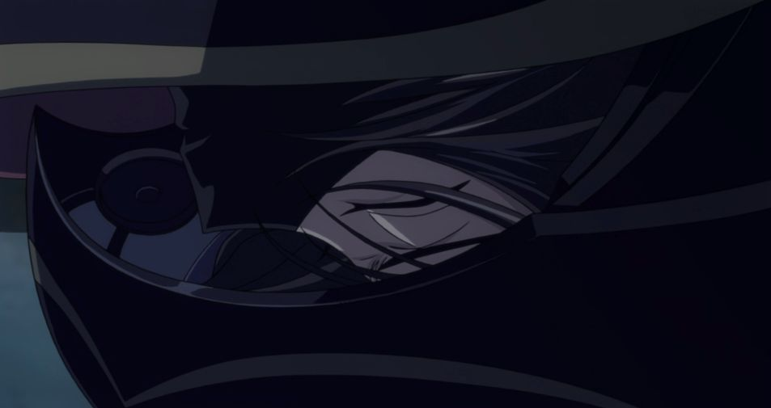
ナリタでの戦闘によって、起こったとある事実がルルーシュやカレンの心を苦しめる。
信念を貫きブリタニアと戦っていく決意をするルルーシュは、
黒の騎士団を率いてコーネリア軍へ向け出撃する。
スザクの操るランスロットと一騎打ちとなるが、
その最中、居るはずのないシャーリーの姿を見るルルーシュ。
シャーリーは、ある人物からルルーシュと黒の騎士団の関わりを指摘され、
ルルーシュを追ってきたのだった。
これにより、ルルーシュの決意が揺らぐ。
C.C.がルルーシュを挑発することによって、決意を固める。
日本解放戦線をおとりにして、ルルーシュ達「黒の騎士団」がクロヴィスの軍隊を叩く。
そんな戦闘の最中にルルーシュはシャーリーを発見してしまう。
ルルーシュは動揺している最中、スザクがルルーシュを撃墜。
遅れてカレンがスザクと戦闘を行う。
撃墜されたルルーシュはコクピットから出てしまい、そこをシャーリーに発見される。
シャーリーは恐る恐る仮面を外すとそこにはルルーシュの顔が!!
第14話 ギアス対ギアス
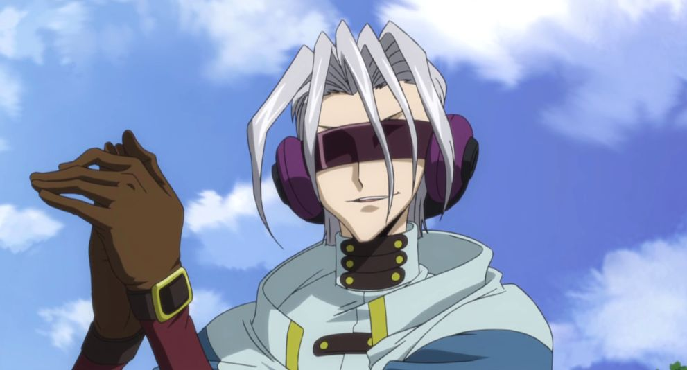
シャーリーに秘密を知られたのではないかと疑い、彼女の後を追うルルーシュ。
どう始末をつけるのかC.C.に問われるが、答えは持たなかった。
その頃、シャーリーはナリタでマオという謎の男と出会う。
マオは人の思考を読むギアス能力者だった。
彼に操られるまま、ある罪を償うため死を選ぼうとするシャーリー。
C.C.は、かつて自分がギアスの能力を与えた男と対峙し、
ルルーシュは真相を知ってしまったシャーリーとの別れを決断する。
シャーリーはナリタの父親の墓に来ていた。
そんなシャーリーの前にマオという男が現れる。
この男が一番キモイし、厄介な敵となる。
マオはギアス保持者。マオのギアスの能力は周囲の人の心を聞き取ることができる。
この能力により、ルルーシュは得意のチェス勝負に敗北してしまう。
マオの能力は制御が気かず、勝手に周囲の人の声が聞こえてしまう。
ルルーシュはシャーリーに銃を向けられ、説得を受けるも、ルルーシュはシャーリーにギアスで「俺に関する全ての記憶を消せ」と命令する。
マオがC.C.を求めているのも分かった。
第15話 喝采のマオ
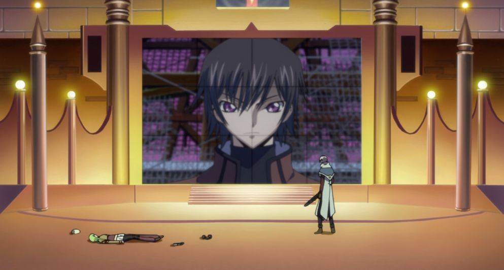
ルルーシュとの契約を破棄し、マオの元へ戻ると言い出したC.C.。
ルルーシュの制止を聞かず、彼の元から去っていく。
C.C.はマオの目的が自分であることを知っていた。
そして、責任を取るために再びマオと会うことを決意したのだ。
指示され向かった遊園地で、マオに銃口を向けるC.C.。
だが、その引き金を引くことができない。
一方、ルルーシュはC.C.を救うため、思考を読み取る相手と頭を使ってどう戦うか思案する。
マオに会いに行ったC.C.を止めるために、ルルーシュはTVを使って、マオを倒すことに。
ルルーシュが支配した警官によって、マオは撃たれる。
そしてルルーシュはC.C.にもう一度契約をさせる。
第16話 囚われのナナリー
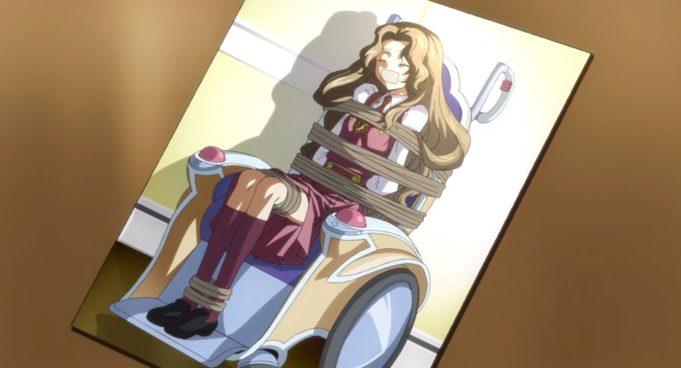
警察に撃たれたはずのマオが生きていた。
ルルーシュに復讐を誓ったマオは、ナナリーを誘拐。
制限時間内に救い出せるかどうかゲームをしようとルルーシュに持ちかける。
危機を察したスザクは、ルルーシュとともにナナリーの救出に向かう。
何とかナナリーを発見した二人だが、そこにはマオの仕掛けた巧妙なトラップが仕掛かられていた！
果たして二人は彼女を救い出す事が出来るのか？
しぶといですねー
今回はナナリーを誘拐してルルーシュを殺そうとする。
心の声が聴けるマオはルルーシュにナナリーの命を懸けたチェスを提案
ルルーシュはその誘いに乗ってしまう。
しかし、ルルーシュは戦う前から策を練っており、スザクに協力を仰ぎ、すでにナナリーを助けていた。
そして、ルルーシュは心を読まれないように、自分自身に「記憶を消せ」とギアスをかけていた。
そしてルルーシュはマオにチェスで敗北するが、ナナリーは生きており、スザクと協力し、マオを確保。
第17話 騎士
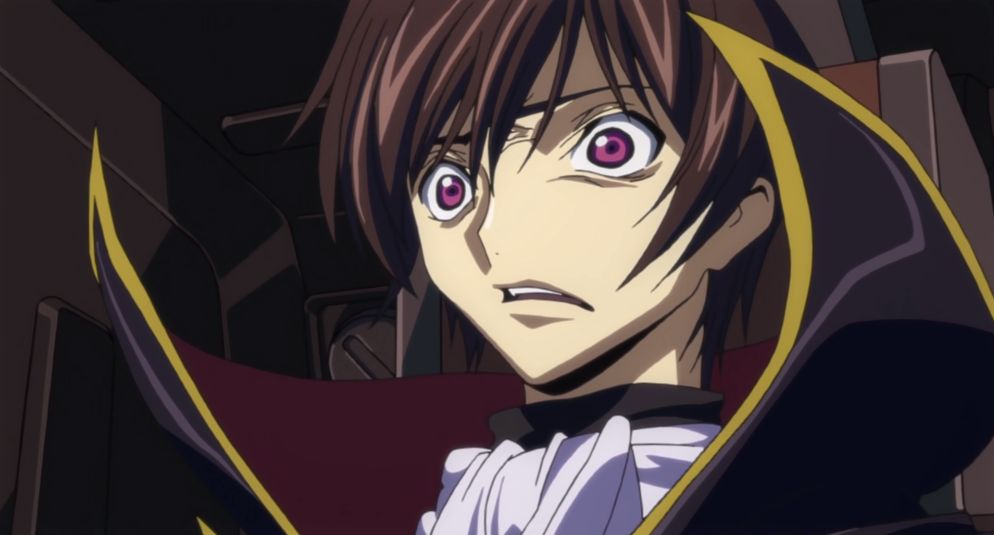
ブリタニア軍に捕らえられた藤堂中佐を救うため、四聖剣が黒の騎士団に協力を求めてきた。
藤堂の身柄奪還を約束し、チョウフ基地を攻めるルルーシュ。
ランスロットの猛撃に遭うが新たな戦力がこれを凌ぐ。
終に追い詰めた宿敵！
が、ゼロが見たそのパイロットはスザクだった！
救出に向かう最中、またもランスロットが待ち構えている。
四聖剣がランスロット相手に時間を稼いでいる間にルルーシュは藤堂を救いに向かう。
藤堂を説得し、新型機に藤堂を乗せる。
そしてルルーシュと藤堂が戦いに合流し、ルルーシュの分析によりランスロットを追い込むことに成功する。
藤堂の五月雨切りを読み、攻撃を避けるが、その衝撃でランスロットのコックピットが空いてしまう。
ルルーシュはランスロットのパイロットはスザクだということを知ってしまう。
計画が水の泡になってしまい焦るルルーシュ。
ユフィの騎士のスザクの心は説得にも揺らぐことなく。
第18話 枢木スザクに命じる
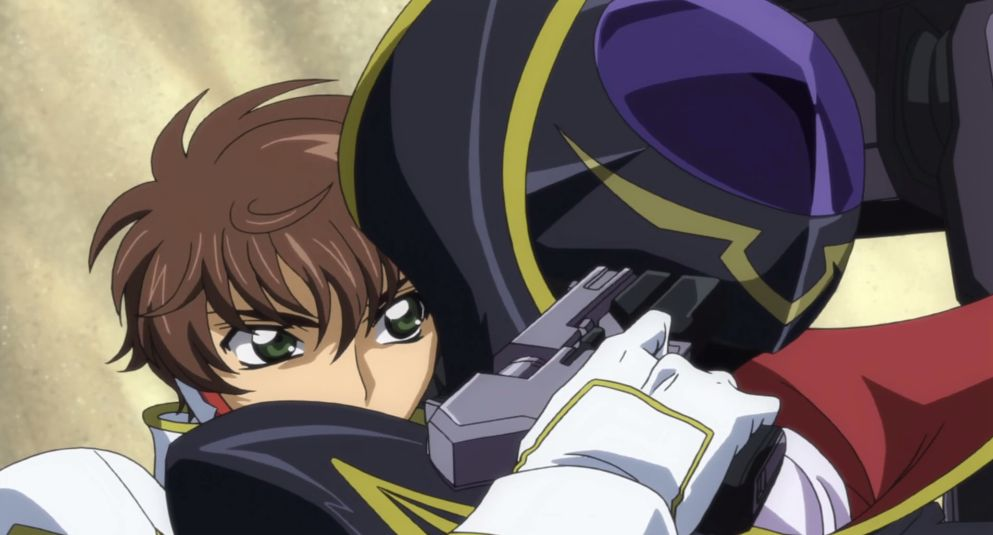
ユーフェミアの騎士となったスザク。
C.C.はスザクにギアスをかけるようルルーシュに提言する。
それを拒み、ユーフェミアに奇襲を仕掛ける黒の騎士団。
この危機にランスロットが出動するが、ルルーシュは自らを囮にそれを待ち受けていた！
藤堂やラクシャータも加わり、戦力増強!!
スザクはユーフェミアの正式な騎士となる
スザクにギアスをかけろとC.C.は提案するも、ルルーシュはこれを拒否。
友情が邪魔をしているのでしょう
ルルーシュ自らが囮となり、スザクをおびき出し、説得をするも失敗。
ゼロに向けてミサイルを発射するため、発射までの時間稼ぎをスザクは上から命じられる。
命令を出したのはユフィではないため、ユフィは異変に気が付きスザクのもとへ
そしてスザク、ルルーシュ、ユフィ、カレンの上に巨大戦艦の「アヴァロン」が出現。
アヴァロンからミサイルが発射されてしまう
第19話 神の島
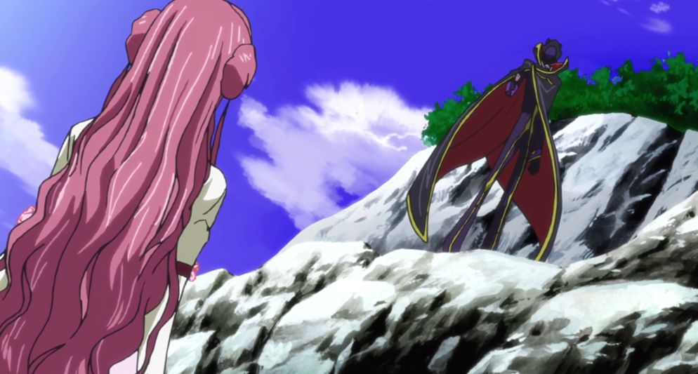
式根島から離れた孤島、神根島で目覚めるスザク。
カレンと遭遇し、彼女が黒の騎士団のメンバーであることを知る。
一方、同じように神根島に漂着したルルーシュは、そこでユーフェミアと出会う。
一方、島内の洞窟ではシュナイゼル達が謎の遺跡の調査していた。
この3組が遭遇した時におきた出来事とは！？
どちらのペアも食料の確保を目指すが、ルルーシュはダメダメに対して、スザクは手慣れたもので確保していく。
ここの二人の差がとても良いですよねww
そして、ペア同士が出会い、人質(ユフィとカレン)の交換を行った後に、四人の下にギアスの紋章が浮かび上がり、地中に沈んでく。
四人がたどり着いたのはシュナイゼルたちの目の前!!
ルルーシュとカレンはすぐさま新機体の「ガウェイン」を強奪し、逃走。
スザクは軍記違反で拘束されてしまう。
そこで聞かされるのはミサイルを打たれる寸前に生きようとするスザクの声
そう、ルルーシュはスザクに「生きろ」と命じていたのだった。
第20話 キュウシュウ戦役
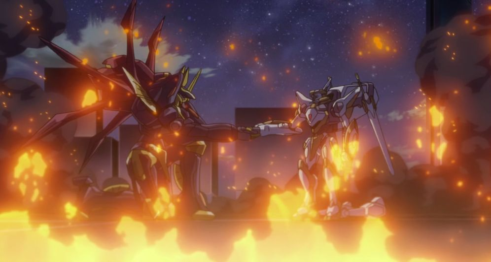
元枢木政権のメンバーだった澤崎敦がフクオカ基地を占拠し「日本」として独立を宣言。
だが、それは中華連邦の傀儡に過ぎなかった。
それに対しゼロは賛同せず、逆に黒の騎士団による真の独立国家をトウキョウに立ち上げると謳う。
その頃、騎士を辞退したスザクは単身ランスロットでフクオカに出撃する。
が、圧倒的な澤崎軍の前に窮地に陥ってしまう！
苦戦している中、ルルーシュ達黒の騎士団もキュウシュウの制圧に向かう。
なんでもキュウシュウの軍には未来がないといっている。
そしてランスロットは無茶な命令により単身でキュウシュウの包囲網に乗り込む。
案の定、ランスロットは敵陣内でエネルギー切れを起こしてしまう。
そんな中、現れたのはガウェイン!!
ガウェインにはルルーシュとC.C.が乗っており、スザクに一時休戦を申し込む。
スザクはそれに応じ、協力してキュウシュウを制圧する!!
二人の共闘が熱い!!!!!
第21話 学園祭宣言
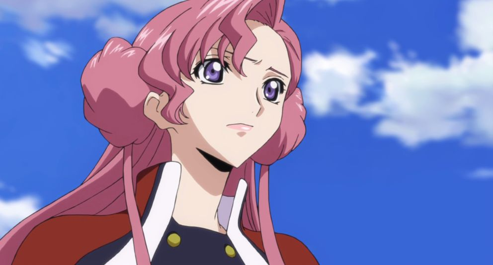
澤崎政権壊滅の話題で世間が持ちきりとなっている頃、
アッシュフォード学園では学園祭が催されていた。
政情不安を吹っ飛ばすかのように生徒会メンバーを始め学生達は大盛り上がり！
がユーフェミアの闖入により事態は思わぬ大騒動へと発展していく。
学園祭が大騒ぎになる中、ユフィは行政特区日本の設立を発表する。
第22話 血染めのユフィ
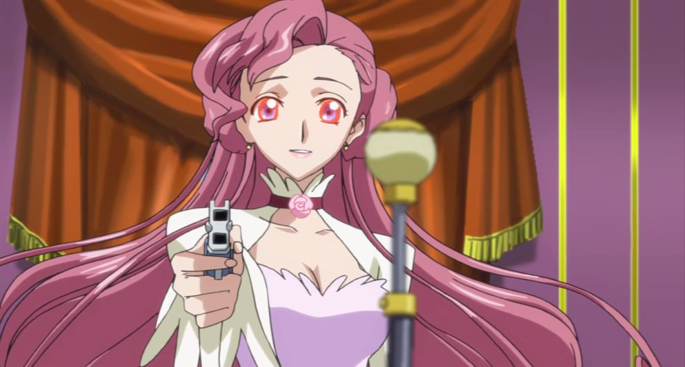
ユーフェミアの発案で、行政特区の立ち上げが決定した。
驚喜するイレヴンたち。
その記念式典にガヴェインで登場するゼロ。
ゼロとして、そして兄としてユフィと対峙するルルーシュ。
その時それは起きた！
式典の最中ゼロたちが現れる。
ゼロはユフィと二人になり話し合う。
ユフィの考えに負け、ルルーシュは負けを認め、特区日本設立に乗ろうとするが、ここでギアスを制御できなくなってしまう。
ユフィに「日本人を殺せ」と命じてしまう
ユフィによる虐殺が始まる。
第23話 せめて悲しみとともに
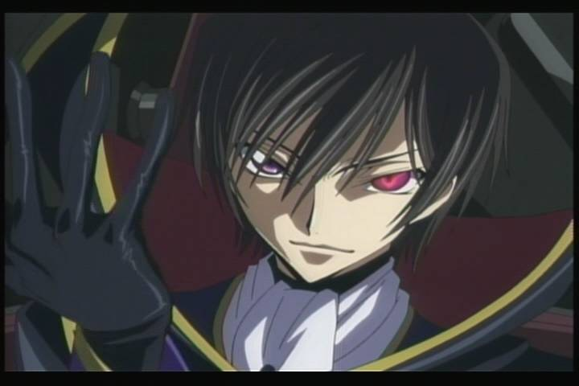
惨劇の式典会場。大混乱に乗じてトウキョウ租界に大攻勢をしかける黒の騎士団。
ユーフェミアを救出すべく会場に突入したスザクはそこで……。
エリア11と日本の未来をかけた戦いが始まった。
ルルーシュ自らの手で銃をユフィに突きつけ殺害してしまう。
そこをスザクに見られてしまい、スザクが怒り狂ってしまう。
スザクはユフィを連れて離脱し、ユフィを急いで治療してもらうが、ユフィは死んでしまう。
結果的に黒の騎士団はイレブンから英雄視されるようになった。
そしてジェルミアの復活!!